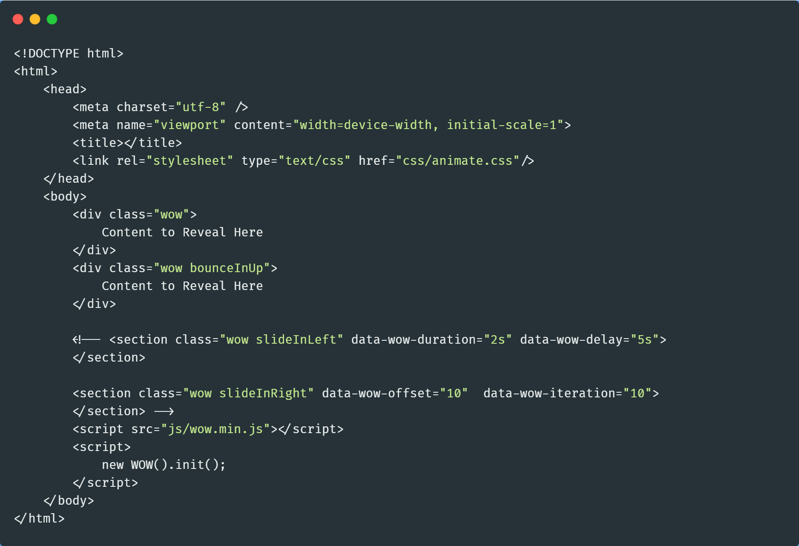
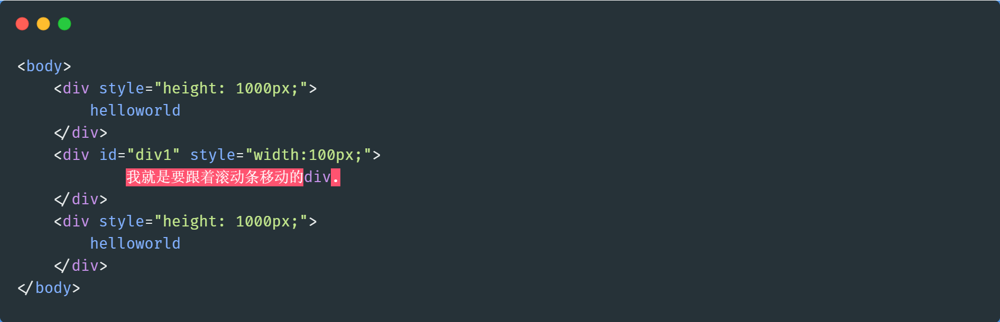

网站性能优化的深度研究
之前我们讲过对网站的文件资源进行优化（以网站的打开速度来作为参照），应该怎么来操作，所以我设计了这个实验，结论是压缩文件和资源的体积。根据我们之前的一篇帖子，从输入Url到页面加载显示完毕，中间这些过程，都是影响网页打开速度的因素
图片来源：GopherSource
对文件资源进行什么样的操作才能优化这个网站？
作出假设压缩文件资源应该能够优化这个网站
设计实验验证控制变量：同一个浏览器，同一个网络环境，同一个PC；对照组：在原来网站的基础上，对图片，CSS文件进行压缩过的网站，
......阅读全文

本站公告
Weibo同步更新
企业中项目流程概括
面试造火箭，工作拧螺丝！话虽这么说，但是了解知晓一个项目的全程，以及自己在这个项目中的位置是非常重要的一件事情，今天我以Web前端项目开发为准，进行一个全程的介绍
图片来源：GopherSource
这个环节是由项目经理完成，项目经理首先和客户进行交流，了解客户的需求，然后分析项目的可行性，如果项目可以被实现，项目经理写出项目需求文档交给设计师完成后续的开发。
页面设计/项目选型这个环节主要是UI设计师参与，UI设计师根据产品需求分析文档，对产品的整体美术风格、交互设计、界面结构、操作流程等做出设计。负责项目中各种交互界面、图标、LOGO、按钮等相关元素的设计与制作。并且确定使用技术
......
阅读全文
动画库wowjs的推荐使用
如果你看到了这篇帖子，请你一定要去访问我的blog网站（或者是直接在我的blog中看到的），我在好几个页面中使用了wow.js，animate.css动画，使我的站点更加的awesome，接下来我来告诉你如何像我一样拥有如此炫酷的网站
图片来源：GopherSource
在我们的页面中引入animate.css和wow.js文件
 ......阅读全文
Vue使用中遇到的一些小问题汇总
Vue作为一款出色的前端框架，与AngleJS,React共称为前端三大框架。是我最喜欢的框架之一，在使用的过程中，遇到的问题，这里我专门开了个帖子，方便今后的学习和查询
图片来源：GopherSource
解决方法：最重要的是，二级v-for，in后面的东西，是父级.子级，调用的时候直接和父级调用一样，特别注意，子级中每一项的名字 i,不能和父级 item一样
......阅读全文
页面右侧固定导航栏实现
在网站的布局中，有时候由于内容比较多，为了能够提高站点的可读性，我们一般会设置一个固定导航，它常常位于页面的右侧或者左侧，在那里固定显示，不随页面的上下滑动而移动，当页面滑动最上面的时候，它还能自己滑动回到原处，那如何才能实现呢？
图片来源：GopherSource
HTML
 ......